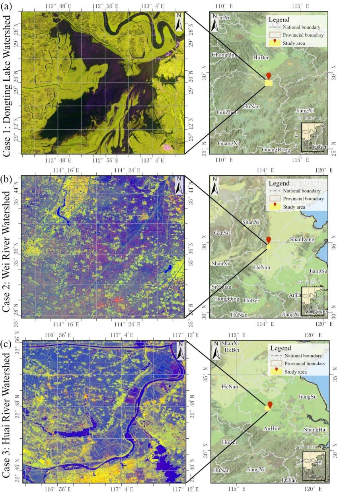
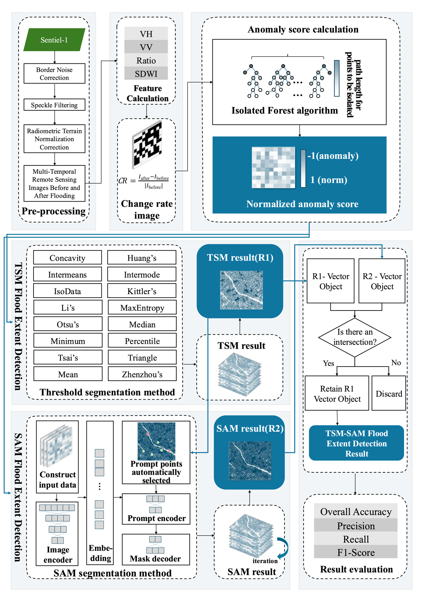
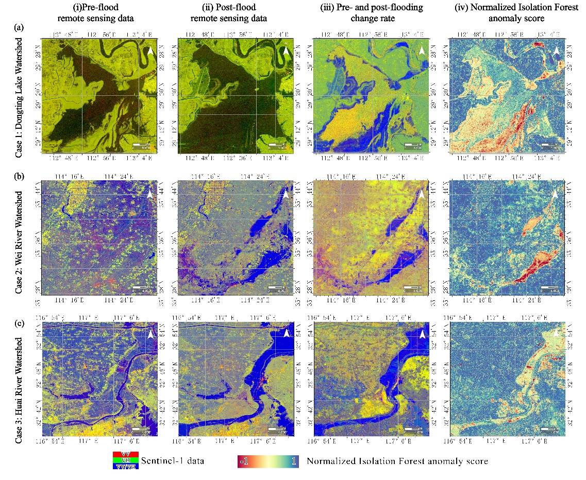
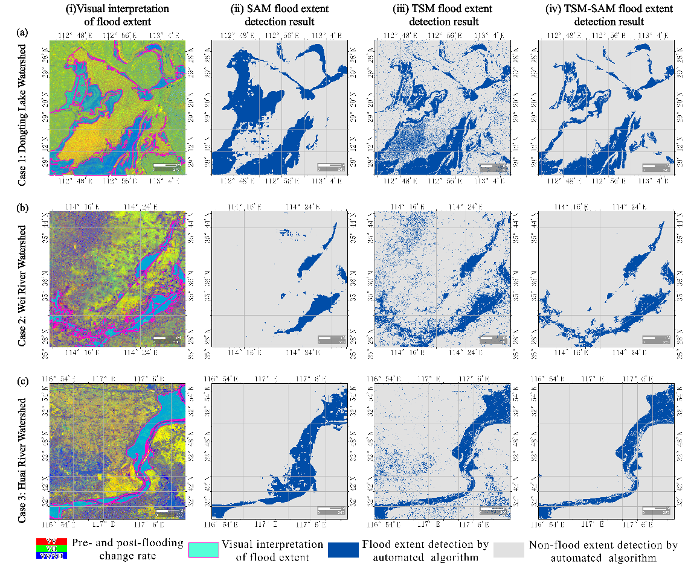
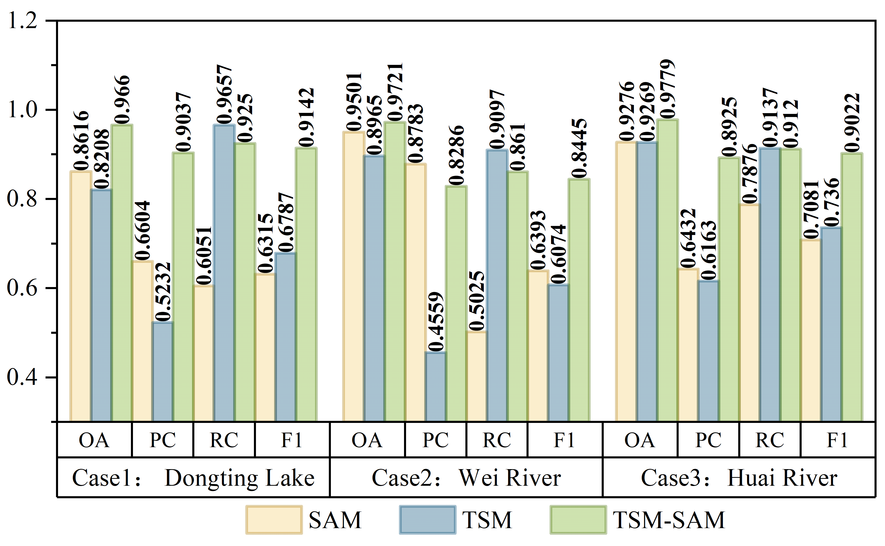
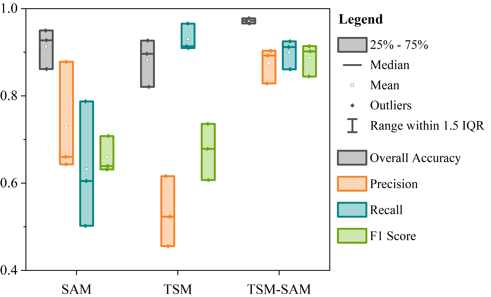
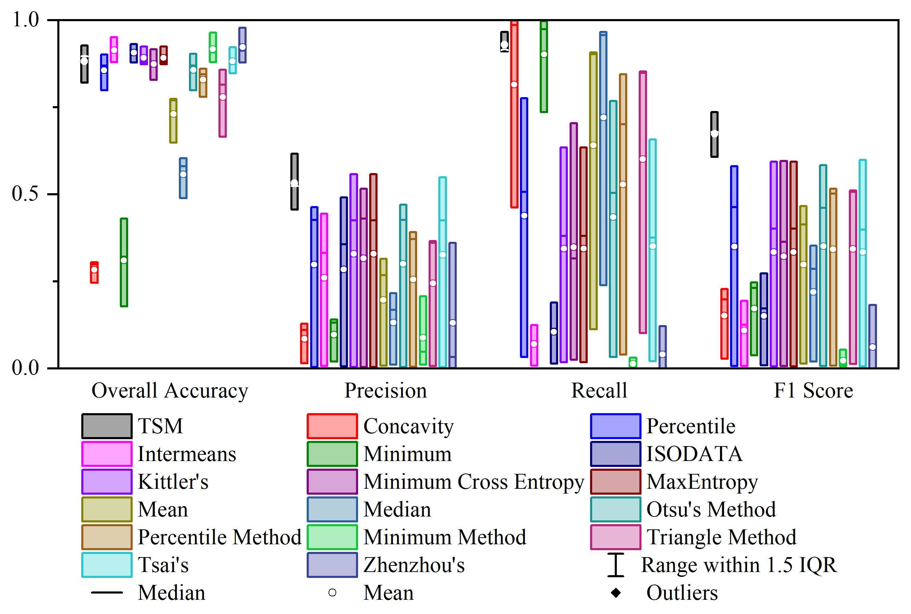
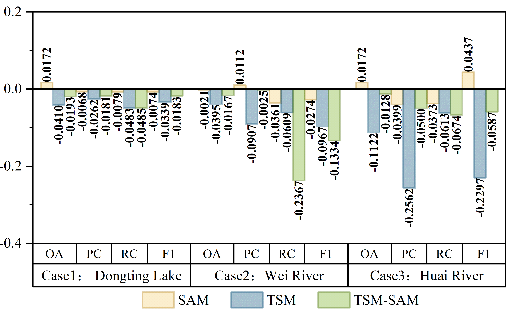
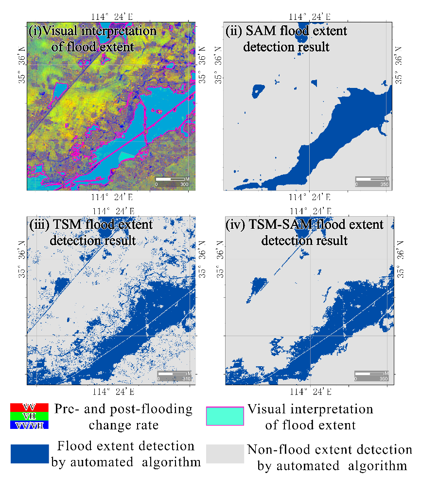

29 An Automated Flood Detection Algorithm for Post-Disaster Assessment
29.1 Introduction
Flooding is one of the most destructive natural disasters globally. Efficient flood detection and management are essential to reduce the damages and mitigate the impacts. Remote sensing has become a vital tool in flood disaster monitoring, offering rapid, large-scale, and timely data collection. This section introduces an integrated algorithm (TSM-SAM) that combines the Isolation Forest algorithm, 16 Threshold Segmentation Methods (TSMs), and Segment Anything Model (SAM) to achieve automated flood detection. TSM-SAM does not require manual intervention and has a fully automated and unified processing flow, which has enormous potential application value in real-time monitoring and evaluation of flood disasters.
29.1.1 Experimental Area and Data
To validate the method’s applicability and robustness across different geographical environments, three typical flood cases from distinct watersheds in China were selected for algorithm testing (Figure 29.1). The chosen watersheds exhibit significant differences in topography and geographic distribution, including the Dongting Lake watershed in Hunan Province, the Wei River watershed in Henan Province, and the Huai River watershed in Anhui Province. The details of each case are as follows:
Case 1: Dongting Lake watershed, a major rice-producing basin in central China, contributing 12% of national rice output): In July 2024, severe flooding struck Yueyang City in Hunan Province due to continuous heavy rainfall and Typhoon “Gemi”. The flood lasted three days, submerging over 45 km² of farmland with an average water depth of approximately 5 meters.
Case 2: Wei River watershed, a major grain production base in central China renowned for its winter wheat-summer maize double cropping system. In July 2021, extreme rainfall in Weihui City, Henan Province, triggered a catastrophic flood in the Wei River watershed. The torrential rain caused rapid water level rise, resulting in urban inundation with a peak depth of 2 meters.
Case 3: Huai River watershed, a key winter wheat and soybean production area in eastern China. In July 2020, heavy rainfall led to a major flood in Huainan City, Anhui Province, within the Huai River watershed. The flood persisted for several weeks. Farmland and infrastructure sustained damage.
This method utilizes Sentinel-1 Synthetic Aperture Rada (SAR) data. The Sentinel-1 data preprocessing follows the framework summarized by Mullissa et al. (2021) for SAR backscatter data preprocessing in GEE, including border noise removal, speckle filtering, and radiometric terrain normalization. Additionally, the land use and land cover dataset from the Dynamic World database released by Google (Brown et al., 2022) were utilized. Cropland areas were extracted from this dataset to create a cropland mask (0 for non-cropland, 1 for cropland).
| Study Area | Data Time |
|---|---|
| Case 1: Yueyang City, Dongting Lake watershed, Hunan Province |
2024-06-22 (before flooding) 2024-07-16 (after flooding) |
| Case 2: Weihui City, Wei River watershed, Henan Province |
2021-07-15 (before flooding) 2021-07-27 (after flooding) |
| Case 3: Huainan City, Huai River watershed, Anhui Province |
2020-07-03 (before flooding) 2020-07-27 (after flooding) |
29.2 Methods
The technical workflow of TSM-SAM. It includes the following key steps: (1) calculate feature indices of images obtained before and after flood; (2) calculate the change rate of the above feature indices before and after the occurrence of flood; (3) use the feature change rate image as input to calculate the normalized anomaly score for each pixel and generate an anomaly score map by the Isolation Forest algorithm; (4) use multiple unsupervised TSMs to automatically segment the anomaly score map and obtain the initial flood extent map (R1); (5) automatically select prompt points based on R1 and apply the SAM model to classify flood and non-flood areas, producing the flood extent map R2; (6) integrate R1 and R2 according to the predefined rules to generate the final flood extent map (R3).

29.2.1 Feature Calculation
This method used Sentinel-1 SAR images, applying speckle filtering to reduce noise and calculating several indices to further highlight flooding information. Specifically, using the VV and VH polarization bands from the Sentinel-1 data, the ratio of VV to VH bands was calculated to enhance the contrast between different polarization channels (Amitrano et al., 2024; DeVries et al., 2020); the Sentinel-1 Dual-Polarized Water Index (SDWI) (Ta et al., 2024) was computed to effectively distinguish water bodies from other land cover types, thereby enhancing crop flood detection capability. The specific calculation equations are as follows:
\[\text{Ratio} = \frac{\text{VV}}{\text{VH}}\] (1)
\[\text{SDWI} = ln\left( 10 \times \text{VV} \times \text{VH} \right)\] (2)
The feature change rate between the pre-flood and post-flood images was calculated for each feature (Equation 3). This metric quantifies the extent of pixel-level changes, emphasizes flood-related variations, and suppresses interference from environmental factors.
\[\text{CR} = \frac{I_{\text{after}} - I_{\text{before}}}{\left| I_{\text{before}} \right|}\] (3)
Where \(I_{\text{after}}\) and \(I_{\text{before}}\) represent value of a certain feature index of a pixel before and after the flood, respectively. The features involved in the computation specifically include VV, VH, Ratio, and SDWI.
29.2.2 Calculation of Anomaly Scores for Feature Change Rate
Using the Isolation Forest algorithm (Liu et.al., 2008) from the Scikit-learn toolkit, each pixel in the feature change rate image was treated as a sample, and the normalized anomaly score for each pixel was calculated. The normalized anomaly score is expressed numerically in the range of [-1, 1]. A score closer to 1 indicates a lower anomaly degree, implying a lower probability of being a flooded pixel, while a score closer to -1 indicates a higher anomaly degree, implying a higher probability of being a flooded pixel.
The Threshold Segmentation Method (TSM) was applied to the anomaly score map to classify as flooded (1) or non-flooded (0). A comprehensive set of 16 TSMs was employed for this segmentation, including Otsu's (Otsu et al., 1975), Intermodes (Prewitt & Mendelsohn, 1966), Mean, Median, Concavity (Rosenfeld & De La Torre, 1983), Minimum, Triangle (Zack et al., 1977), Percentile (Dhal et al., 2020), Huang's (Huang & Wang, 1995), Intermeans (Ridler et al., 1978) and ISODATA (Ball, 1965), MaxEntropy (Kapur et al., 1985)、Li's (Li & Lee, 1993)、Kittler's (Kittler & Illingworth, 1986)、Tsai's (Tsai, 1985) and Zhen Zhou's method (Wang, 2016). For each TSM, a binary segmentation map was generated. These binary maps were then combined to create a new image. In this new image, when the value of a pixel was greater than or equal to 15 (i.e., at least 15 algorithms classified the pixel as flooded), the pixel was labeled as a flooded pixel. The final flood extent derived from the TSM-based approach was denoted as R1.
The Segment Anything Model (SAM) is a deep learning-based segmentation model(Ke et al., 2023). The Isolation Forest anomaly scores were first transformed into three-channel pseudo-RGB data to ensure compatibility with SAM's input requirements. Prompt points were derived from the threshold segmentation result (R1). The processed pseudo-RGB data along with the selected prompt points were then fed into the SAM model for flood area detection. The prompt generation process was as follows: First, setting the total number of prompt points to 40. To ensure a balance between positive and negative samples, 15 flooded (1) pixels and 15 non-flooded (0) pixels were randomly selected from R1 as positive and negative prompt points. The remaining 10 prompt points were allocated proportionally based on the flood pixel ratio \(r\) in R1, with 10×r points assigned to flooded areas and 10×(1-r) points to non-flooded areas. Specifically, let \(\text{Npos}\) be the number of flooded pixels and \(\text{Nneg}\) the number of non-flooded pixels in R1. The ratio \(r\) was calculated as Equation 4. To enhance result stability, the SAM segmentation was independently executed 20 times with a majority voting mechanism applied. Pixels consistently identified as flooded areas in ≥18 detection instances were classified as flooded zones (1). The final flood extent derived from the SAM-based approach was denoted as R2.
\[r = \frac{\text{Npos}}{\text{Npos} + \text{Nneg}}\] (4)
The final TSM-SAM flood extent detection result (R3) was generated through an integrated vector-based analysis of both the TSM-derived result (R1) and SAM-derived result (R2). The methodology involved: (1) converting all connected pixel regions in R1 and R2 into individual vector polygons; (2) performing spatial overlay analysis between the two vector datasets; (3) applying a conservative consensus rule where only areas identified as flooded in both R1 and R2 were retained, specifically preserving the R1 vector boundaries in these overlapping zones; (4) excluding all non-overlapping flood detections from either dataset. This fusion approach leverages the complementary strengths of both methods.
29.2.3 Accuracy Evaluation
Flood detection accuracy was evaluated using indicators such as Overall Accuracy (OA), Precision (P), Recall (R), and F1-Score (F1). These metrics were compared against manually digitized flood maps for validation.
\[\text{OA} = \frac{\text{TP} + \text{TN}}{\text{TP} + \text{TN} + \text{FP} + \text{FN}}\] (5) \[\text{P} = \frac{\text{TP}}{\text{TP} + \text{FP}}\] (6) \[\text{R} = \frac{\text{TP}}{\text{TP} + \text{FN}}\] (7) \[F1 = 2 \times \frac{\text{P}\text{×}\text{R}}{\text{P} + \text{R}}\] (8)
Where TP (True Positives) refers to the number of pixels correctly classified as flooded, TN (True Negatives) refers to the number of pixels correctly classified as non-flooded, FN (False Negatives) refers to the pixels incorrectly classified as non-flooded but are actually flooded, and FP (False Positives) refers to the pixels incorrectly classified as flooded but are actually non-flooded.
29.3 Results
The proposed methodology was validated using multi-temporal Sentinel-1 SAR data across three characteristic flood events: the 2024 Dongting Lake (Hunan) flood, 2021 Wei River (Henan) flood, and 2020 Huai River (Anhui) flood. Three algorithms—TSM, SAM, and TSM-SAM—were evaluated and compared for their effectiveness in detecting flood extent.
Figure 29.3 illustrates pre- and post-flood images, feature change rate maps, and normalized anomaly score maps derived from the Isolation Forest algorithm. Flooded areas are clearly identified with low anomaly scores (near -1), while non-flooded areas show higher scores (near 1), indicating strong correspondence between anomaly scores and actual flood-affected areas.

Figure 29.4 shows flood extent maps generated by the TSM, SAM, and TSM-SAM methods. TSM captures boundary details well but includes noisy, scattered pixels. SAM produces smoother and more cohesive results but lacks detail at the edges. TSM-SAM combines the strengths of both, yielding more complete and accurate results across all three cases.

Figure 29.5 presents the flood detection accuracy results for the TSM, SAM, and TSM-SAM methods across three cases. TSM-SAM consistently outperforms the other two approaches, achieving the highest overall accuracy (OA) and F1 scores in each scenario. Specifically, the method achieves an average OA of 0.9720 and F1 score of 0.8870, demonstrating strong reliability in both precision and recall. The best performance is observed in the Huai River case, with OA reaching 0.9779 and F1 score of 0.9022.

Figure 29.6 shows box plots illustrating the distribution of accuracy metrics—OA, precision, recall, and F1—for all three methods. Compared to TSM and SAM, the TSM-SAM method exhibits the most concentrated and stable metric distribution, indicating greater robustness and consistency in flood extent detection across varied environments.

Figure 29.7 compares the accuracy of the proposed TSM with 16 other threshold segmentation methods. TSM outperforms the average of individual methods in all regions and demonstrated more stable performance across basins.

29.4 Discussion
The TSM-SAM method uses anomaly scores generated by Isolation Forest preprocessing as input, offering the following advantages. First, abnormal scores effectively amplify flood signals and suppress background noise through unsupervised learning, which is beneficial for improving flood detection accuracy. Figure 29.8 shows that models using Isolation Forest anomaly scores as input outperformed those using raw VV, VH, and SDWI data. Improvements were observed across most metrics, especially in the Huai River basin for the TSM model.
Second, it can unify data from different sensors (SAR/optical/thermal infrared) into the same feature space, facilitating multi-source data integration. In operational disaster monitoring, diverse remote sensing sensors exhibit inherent disparities in spectral features, spatial resolutions, and imaging physics. The Isolation Forest algorithm serves as a unified feature extractor by converting such heterogeneous data into standardized anomaly score maps. This transformation enhances the model's adaptability to different scenes and data sources.
Third, the single-channel anomaly scores can be losslessly converted into three-channel pseudo-RGB data, enabling direct input into standard CNN architectures (e.g., SAM's Vision Transformer encoder). For example, in this study, the single channel data of anomaly score map was replicated to form three channel data, a format readily processed by deep learning models. The approach maintains full data fidelity while meeting architectural input requirements. Furthermore, the method demonstrates remarkable flexibility with multi-source data. For example, when employing diverse inputs such as SAR, optical, and thermal infrared images, each modality is first independently processed to generate corresponding anomaly score maps. These maps are then combined into a unified three-channel representation.

Furthermore, the TSM-SAM method effectively integrates the dual advantages of SAM and TSM, demonstrating outstanding performance in flood extent detection (as shown in Figure 29.9). While the traditional TSM preserves finer flood boundary details, it suffers from insufficient spatial coherence, manifesting as numerous scattered misclassified pixels. In contrast, the deep learning-based SAM model can accurately identify the main flood areas and maintain good spatial continuity, but tends to over-smooth boundary details. This limitation likely stems from SAM's foundation as a general-purpose pre-trained model not specifically optimized for remote sensing data. Moreover, its emphasis on global contextual information during high-level convolutional feature extraction may enhance large-scale semantic understanding at the potential cost of local edge precision. The innovative hybrid architecture of TSM-SAM retains SAM's powerful feature extraction capabilities for complex scenes while inheriting TSM's advantages in edge precision and computational efficiency, ultimately achieving the highest and most stable detection accuracy across all test cases. By combining the semantic understanding of deep learning with the pixel-level accuracy of traditional image processing, this hybrid approach provides a balanced solution that delivers both accuracy and practicality for operational flood monitoring.

29.5 Conclusions
TSM-SAM is an automatic flood extent detection framework combining Isolation Forest, traditional threshold segmentation, and the SAM deep learning model. The test results of three typical flood cases show that TSM-SAM achieves high detection accuracy (average OA = 0.9720, F1 = 0.8870). The Isolation Forest preprocessing enhances feature discriminability and model adaptability by generating optimized input representations. The combined approach significantly outperforms standalone thresholding or SAM-based methods, offering high efficiency and robustness. The TSM-SAM framework demonstrates high potential for efficient, high-accuracy crop flood mapping, supporting rapid agricultural disaster response.
References
Amitrano, D., Di Martino, G., Di Simone, A., & Imperatore, P. (2024). Flood detection with SAR: A review of techniques and datasets. Remote Sensing, 16(4), 656. https://doi.org/10.3390/rs16040656.
Ball, G. H. (1965). ISODATA, a novel method of data analysis and pattern classification. Stanford Research Institute, AD-699616.
Brown, C. F., Brumby, S. P., Guzder-Williams, B., Birch, T., Hyde, S. B., Mazzariello, J., Czerwinski, W., Pasquarella, V. J., Haertel, R., Ilyushchenko, S., Schwehr, K., Weisse, M., Stolle, F., Hanson, C., Guinan, O., Moore, R., & Tait, A. M. (2022). Dynamic World, Near real-time global 10 m land use land cover mapping. Scientific Data, 9(1), 251. https://doi.org/10.1038/s41597-022-01307-4
DeVries, B., Huang, C., Armston, J., Huang, W., Jones, J. W., & Lang, M. W. (2020). Rapid and robust monitoring of flood events using Sentinel-1 and Landsat data on the Google Earth Engine. Remote Sensing of Environment, 240, 111664. https://doi.org/10.1016/j.rse.2020.111664
Dhal, K. G., Das, A., Ray, S., Gálvez, J., & Das, S. (2020). Nature-inspired optimization algorithms and their application in multi-thresholding image segmentation. Archives of Computational Methods in Engineering, 27(3), 855–888. https://doi.org/10.1007/s11831-019-09334-y
Huang, L. K., & Wang, M.-J. J. (1995). Image thresholding by minimizing the measures of fuzziness. Pattern Recognition, 28(1), 41–51. https://doi.org/10.1016/0031-3203(94)E0043-K
Kapur, J. N., Sahoo, P. K., & Wong, A. K. (1985). A new method for gray-level picture thresholding using the entropy of the histogram. Computer Vision, Graphics, And Image Processing, 29(3), 273–285. https://doi.org/10.1016/0734-189X(85)90125-2
Ke, L., Ye, M., Danelljan, M., Liu, Y., Tai, Y.-W., Tang, C.-K., & Yu, F. (2023). Segment Anything in High Quality. https://arxiv.org/abs/2306.01567
Kittler, J., & Illingworth, J. (1986). Minimum error thresholding. Pattern Recognition, 19(1), 41–47. https://doi.org/10.1016/0031-3203(86)90030-0
Li, C. H., & Lee, C. (1993). Minimum cross entropy thresholding. Pattern Recognition, 26(4), 617–625. https://doi.org/10.1016/0031-3203(93)90115-D
Liu, F., Ting, K., Zhou, Z., & Giannotti, F. (2008). Isolation Forest, 2008 Eighth IEEE International Conference On Data Mining. IEEE, 413-422. https://doi.org/10.1109/ICDM.2008.17
Mullissa, A., Vollrath, A., Odongo-Braun, C., Slagter, B., Balling, J., Gou, Y., Gorelick, N., & Reiche, J. (2021). Sentinel-1 SAR backscatter analysis ready data preparation in google earth engine. Remote Sensing, 13(10). https://doi.org/10.3390/rs13101954O
Tsu, N. & others. (1975). A threshold selection method from gray-level histograms. Automatica, 11(285–296), 23–27. https://doi.org/10.1109/TSMC.1979.4310076
Prewitt, J. M., & Mendelsohn, M. L. (1966). The analysis of cell images. Annals of the New York Academy of Sciences, 128(3), 1035–1053. https://doi.org/10.1111/j.1749-6632.1965.tb11715.x
Ridler, T. W., Calvard, S., & others. (1978). Picture thresholding using an iterative selection method. IEEE Trans. Syst. Man Cybern, 8(8), 630–632. https://doi.org/10.1109/TSMC.1978.4310039
Rosenfeld, A., & De La Torre, P. (1983). Histogram concavity analysis as an aid in threshold selection. IEEE Transactions on Systems, Man, and Cybernetics, SMC-13(2), 231–235. https://doi.org/10.1109/TSMC.1983.6313118
Ta, L., Yu, C., Li, Z., Hu, X., Song, C., Huang, W., & Zhou, M. (2024). Dynamic flood mapping by a normalized probabilistic classification method using satellite radar amplitude time series. Giscience & Remote Sensing, 61(1), 2380125. https://doi.org/10.1080/15481603.2024.2380125
Tsai, W. H. (1985). Moment-preserving thresolding: A new approach. Computer Vision, Graphics, And Image Processing, 29(3), 377–393. https://doi.org/10.1016/0734-189X(85)90133-1
Wang, Z. (2016). Zhenzhou threshold selection. https://www.mathworks.com/matlabcentral/fileexchange/56371-zhenzhou-threshold-selection
Zack, G. W., Rogers, W. E., & Latt, S. A. (1977). Automatic measurement of sister chromatid exchange frequency. Journal of Histochemistry & Cytochemistry, 25(7), 741–753. https://doi.org/10.1177/25.7.70454